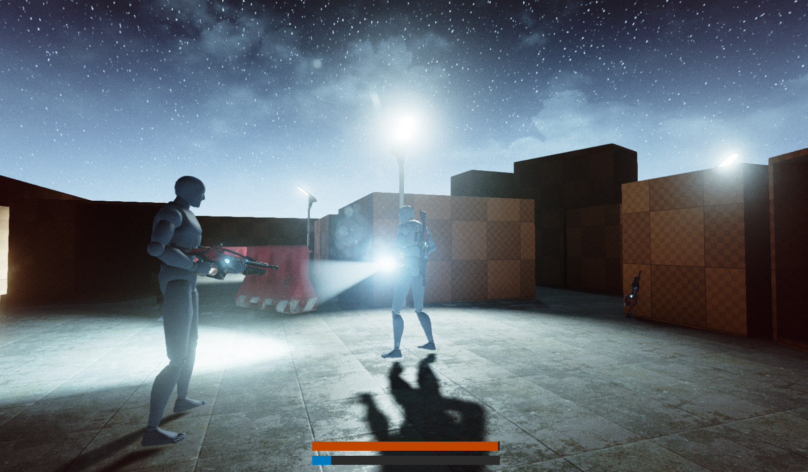
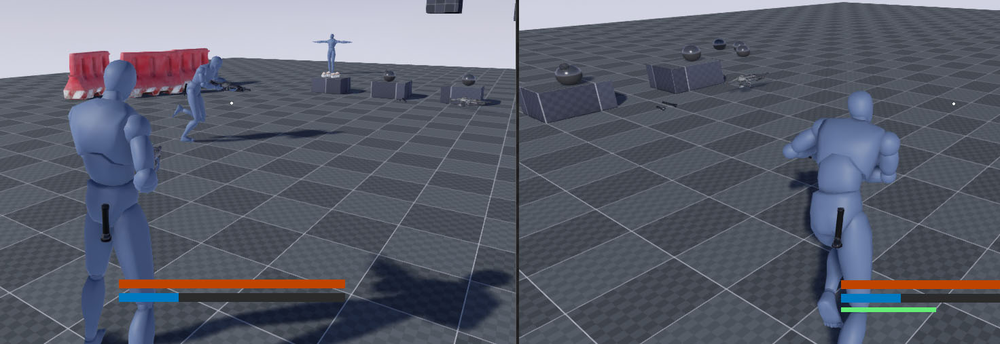
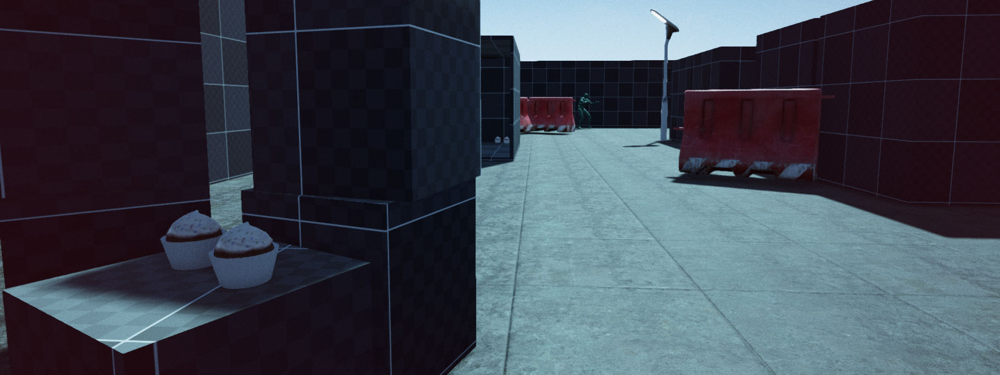
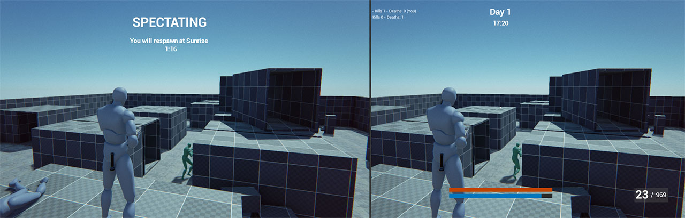

Survival Sample Game: Section 5
C++ Sample project covering common gameplay concepts packed in a small coop survival game.
Contents
Introduction
In section 5 of the ongoing survival game series we dive into gameplay networking (Replication). If you are not yet familiar with this ongoing project be sure to check out the for information on the series!
Please consider this documentation a reference guide to get additional information on topics covered in the source itself. If you have any questions then feel free to leave your questions & feedback on the section-specific forum thread!

Links
Networking in Unreal Engine 4
Networking in UE4 is based around the client-server model . This means that there is one server that is authoritative over the game state. All connected clients are kept in close proximity to this state.
Networking in Unreal Engine 4 is referred to as Replication. Therefor a "replicated variable" is one that is kept in sync between client and server where the server maintains and controls the value and the client receives updates to this value to maintain a synchronized state.
The UE4 Docs already have a great deal on Networking & Multiplayer , this page will focus on more practical examples instead covering most commonly used patterns to network a game.
Practical Networking Examples
The best way to learn a difficult topic like replication is through practical examples. The entire sample game is networked and uses a variety of common practices used in many multiplayer games. We'll take one example for each of the common patterns (Server-function, Client-function, NetMulticast and Repnotifies) So let's get started with server functions!
Making the player sprint
Keywords: Server-function (RPC) , Reliable/Unreliable, WithValidation, Replication conditions

To let the player sprint, we need to update the movement speed on the server, since the server is authoritative of the player's position. The issue we need to solve here is that whenever we press the sprint-key (in our case "LeftShift") on the client's machine we need to push this input event to the server to let it know we want to start sprinting.
In the following code sample we have a function that we mapped to the input key ("LeftShift") input functions are always executed on the client. The input function OnStartSprinting() calls SetSprinting(), which at this time is still executed on the client side. This function performs a Role check to see if we are a client or server and makes the request to the server in case we are calling this on the client.
/* Client-side function mapped to input key */
void ASCharacter::OnStartSprinting()
{
SetSprinting(true);
}
/* Function that can be called on either server or client. Makes a remote procedure call if called from the client. */
void ASCharacter::SetSprinting(bool NewSprinting)
{
/* We want to update this variable regardless if a client or server makes the call (therefor it's not placed within a Role == ROLE_Authority check.
You generally only want to update (replicated) variables on the server and not client.
bWantsToRun is a special case in our SCharacter class since we added a "Replication Condition" which is set up to skip replication of this variable for the owner, all other clients still receive changes to this variable as normal.
*/
bWantsToRun = NewSprinting;
if (Role < ROLE_Authority)
{
ServerSetSprinting(NewSprinting);
}
}
Any "Server" function must be marked with "WithValidation" in the header (in our case inside SCharacter.h) for security reasons. You generally want to include some conservative validation checks. If this check fails the client disconnects from the server. In this case we simply return true without any additional checks.
As of 4.8 you are required to declare the _Implementation and _Validate functions in the header as well (Make sure you class is updated to GENERATED_BODY() instead of the deprecated GENERATED_UCLASS_BODY() at the top of your header or the compiler will warn about duplicate declarations as pre-4.8 code automatically generated these two functions in the header)
/* Server side call to update actual sprint state */
UFUNCTION(Server, Reliable, WithValidation)
void ServerSetSprinting(bool NewSprinting);
void ServerSetSprinting_Implementation(bool NewSprinting);
bool ServerSetSprinting_Validate(bool NewSprinting);
It's recommended to keep the _Implementation functions as simple as possible and simply make a call back to the caller which is SetSprinting().
void ASCharacter::ServerSetSprinting_Implementation(bool NewSprinting)
{
SetSprinting(NewSprinting);
}
bool ASCharacter::ServerSetSprinting_Validate(bool NewSprinting)
{
return true;
}
You may have noticed the "Reliable" keyword. This specifies that we require a guarantee this function to be received at the other end. In real networking situations you will get to deal with packet loss. Information may get lost in transit, if this would happen and this function is set to the alternative "Unreliable" we might end up playing the sprinting animation on the client, but the server has never received the request and is still handling the player as if it is simply walking. For one off calls that update the state to new absolute values, using Reliable is recommended, it does add more strain to the networking however, there is definitely a good reason for using Unreliable whenever you can.
An example of what unreliable would be appropriate for is an update to a vector position, if a packet were lost it wouldn't matter so much if we are continuously sending new positions anyway. Using unreliable in those types of situations is highly recommended as there is no reason to re-send packets on failure, or to wait for a packet to arrive before allowing the next packet to be executed as with "Reliable".
Moving back to the first example the variable bWantsToRun is updated both locally on the client and on the server through SetSprinting(...) and ServerSetSprinting which calls SetSprinting as well. This is because we applied a special Replication Condition to this variable to skip the owner of the variable when replicating. This means all other clients still receive updates to this variable, except the owning client, which has already updated the variable locally to begin with.
/* Function that can be called on either server or client. Makes a remote procedure call if called from the client. */
void ASCharacter::SetSprinting(bool NewSprinting)
{
/* We want to update this variable regardless if a client or server makes the call (therefor it's not placed within a Role == ROLE_Authority check.
You generally only want to update (replicated) variables on the server and not client.
bWantsToRun is a special case in our SCharacter class since we added a "Replication Condition" which is set up to skip replication of this variable for the owner, all other clients still receive changes to this variable as normal.
*/
bWantsToRun = NewSprinting;
if (Role < ROLE_Authority)
{
ServerSetSprinting(NewSprinting);
}
}
void ASCharacter::GetLifetimeReplicatedProps(TArray<FLifetimeProperty>& OutLifetimeProps) const
{
Super::GetLifetimeReplicatedProps(OutLifetimeProps);
// Value is already updated locally, skip in replication step
DOREPLIFETIME_CONDITION(ASCharacter, bWantsToRun, COND_SkipOwner);
}
A reason for taking this approach to locally updating variables before sending the request is to keep your game responsive when dealing with latency in multiplayer. If your player has to wait for his keypress to change something in-game by routing it through a server it introduces a very noticeable input lag. Players are extremely perceptive to this lag! By immediately updating the variable locally the code to start the sprinting animation can begin immediately and the game will feel more responsive as a result.
Simulating a bomb explosion
Keywords: NetMulticast

Our bomb actor deals damage to nearby Pawns and shows an explosion particle effect when detonated. The application of damage is done on the server-side only, the particle effect however should spawn on all clients. A great way of handling this is by using NetMulticast which sends a RPC request to all connected clients.
The definition of a NetMulticast functions looks like this:
UFUNCTION(Reliable, NetMulticast)
void SimulateExplosion();
void SimulateExplosion_Implementation();
As with Server and Client functions, only the _Implementation function exists in the Cpp file, calling these functions is still done through the original function name (eg. SimulateExplosion()) instead of the _Implementation variant.
/* This function runs on the server, and applies the gameplay effects like damage
It also triggers SimulateExplosion() that runs on all clients because of NetMulticast specifier */
void ASBombActor::OnExplode()
{
// ...
// Runs on all clients (NetMulticast)
SimulateExplosion();
/* Applies damage */
// ...
}
void ASBombActor::SimulateExplosion_Implementation()
{
/* This should generally only be used for cosmetic effects or updating collision states etc., all gameplay must run on the server. */
if (ExplosionSound)
{
AudioComp->SetSound(ExplosionSound);
AudioComp->Play();
}
if (ExplosionFX)
{
ExplosionPCS->SetTemplate(ExplosionFX);
ExplosionPCS->ActivateSystem();
}
}
Now every client will see and hear an explosion effect when the bomb is detonated by a player.
Respawning item pickups
Keywords: Repnotify

Items that can be picked up in the game still persist and re-appear after a while. When picked up, the object remains in place, but will de-activate any visible effect and mesh until it re-appears through a timer. Whenever this state variable changes, we want all clients to respond by either showing or hiding the mesh of the Actor. For this we can use Repnotify, which is a specifier on a variable that binds a function to be called on any change to that variable.
UPROPERTY(Transient, ReplicatedUsing = OnRep_IsActive)
bool bIsActive;
UFUNCTION()
void OnRep_IsActive();
In the implementation of the repnotify function we check the updated value and respond accordingly.
/* Only runs on clients, NOT called on server when a variable changes */
void ASPickupActor::OnRep_IsActive()
{
if (bIsActive)
{
OnRespawned();
}
else
{
OnPickedUp();
}
}
void ASPickupActor::GetLifetimeReplicatedProps(TArray<FLifetimeProperty> & OutLifetimeProps) const
{
Super::GetLifetimeReplicatedProps(OutLifetimeProps);
DOREPLIFETIME(ASPickupActor, bIsActive);
}
It's important to keep in mind that any change to a repnotify variable only triggers the function on clients and not the server. So whenever this variable changes, we need to manually call the function if we are the server:
/* This function is called on the server, so we must manually call OnPickedUp when updating bIsActive */
void ASPickupActor::OnUsed(APawn* InstigatorPawn)
{
// ...
/* notifies all clients, except the server */
bIsActive = false;
/* Manually call the function since we are the server and didn't receive the repnotify call */
OnPickedUp();
// ...
Super::OnUsed(InstigatorPawn);
}
Using repnotifies is great for responding to changes in the state of an Actor as we've done in pickup item example above.
Changing the HUD State
Keywords: Client-function (RPC)

Depending on the state of the game mode (or player) we show a different HUD. When the player is dead and waiting to respawn we have a spectator HUD, if the game ended we show a Game Over HUD with the total score. These states are updated and evaluated on the server, however the HUD only exists on the Client-side. One way of handling changes to the HUD from a server is to use Client functions. These functions are only executed on the owning client of an object, in this case whomever owns the HUD. Let's dive into an example of a client function.
UFUNCTION(reliable, client)
void ClientHUDStateChanged(EHUDState NewState);
void ClientHUDStateChanged_Implementation(EHUDState NewState);
Its signature is identical to NetMulticast, using an _Implementation function and without _Validate as used for Server-functions. To keep track of the type of function we are dealing with, it's best to use the "Client"-prefix as is done in the engine code.
/* This function is called on the server-side, and requests the client to change the HUD state */
void ASPlayerController::StartSpectating()
{
/* Perform server-side initializing of spectator code */
// ...
/* Update the HUD to show the spectator screen */
ClientHUDStateChanged(EHUDState::Spectating);
}
/* Only called on the owning client */
void ASPlayerController::ClientHUDStateChanged_Implementation(EHUDState NewState)
{
ASHUD* MyHUD = Cast<ASHUD>(GetHUD());
if (MyHUD)
{
MyHUD->OnStateChanged(NewState);
}
}
This pattern is very useful for performing client side logic that the client did not request itself in the first place like it would with keyboard input events.
Closing
By now we've covered 4 common replication concepts using a few practical examples from the project. I definitely recommend studying the documentation pages on Networking and Multiplayer , they will help you in understanding the flow of data when dealing with networking in games.
If you have feedback or questions on this section, feel free to reach out through the forums .
Links
- -
Notes
If you're adding networking to your own game, you must specify the UnrealNetwork header in your ProjectName.h (in our case SurvivalGame.h)
// This is NOT included by default in an empty project! It's required for replication and setting of the GetLifetimeReplicatedProps
#include "Net/UnrealNetwork.h"
Project & Wiki by
Tom Looman